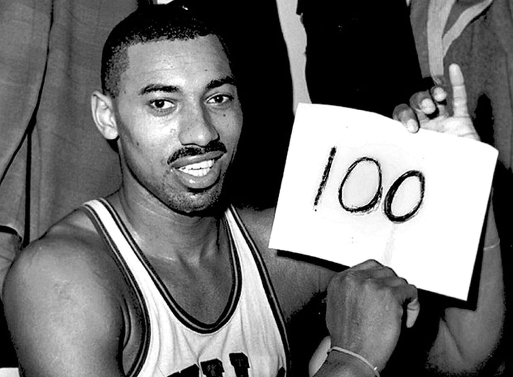

Accomplishments
Basketball, a fast-paced and exciting game, is one of the most popular sports in the world. Numerous players, teams, and coaches have accomplished so much in basketball over the years, from winning championships to breaking records and setting new milestones. Here are some of the most remarkable accomplishments in basketball.
Michael Jordan's Six NBA Championships:
Michael Jordan is widely regarded as the greatest basketball player of all time, and his six NBA championships are a testament to his incredible skills and leadership on the court. Jordan won his first title in 1991, defeating the Los Angeles Lakers in five games. He followed that up with championships in 1992 and 1993, where he was the Finals MVP for both championships. After a brief hiatus from the game, Jordan returned to lead the Chicago Bulls to a three-peat from 1996 to 1998, cementing his status as one of the greatest players in NBA history. Jordan's ability to perform in clutch situations, his unmatched work ethic, and his competitive spirit made him a force to be reckoned with on the court.
The Boston Celtics' 11 Championships in 13 Seasons:
The Boston Celtics were the most dominant team in basketball during the late 1950s and 1960s, and their 11 championships in 13 seasons set a new standard for excellence in the sport. Led by legendary coach Red Auerbach and players like Bill Russell, Bob Cousy, and John Havlicek, the Celtics were known for their team-oriented play, suffocating defense, and clutch performances. Russell, in particular, was a dominant force on the court, winning five NBA MVP awards and leading the Celtics to eight consecutive championships from 1959 to 1966.
Wilt Chamberlain's 100-Point Game:

Wilt Chamberlain was a dominant force in basketball during the 1960s, and his 100-point game on March 2, 1962, was a feat that has never been matched in NBA history. Chamberlain's performance was so impressive that it remains one of the most iconic moments in the sport. His scoring outburst came in a game against the New York Knicks, and he made an incredible 36-of-63 field goal attempts and 28-of-32 free throw attempts. Chamberlain's incredible athleticism, strength, and skill made him one of the most dominant players in NBA history.
Steph Curry's Three-Point Records:
.jpg) Steph Curry's accomplishment of breaking the 3-point record is an incredible feat that has solidified his place as one of the greatest basketball players of all time. He broke the record on April 17, 2021 by making his 2,974th career 3-pointer during a game against the Denver Nuggets. This surpassed Ray Allen's previous mark of 2,973 and cemented Curry's legacy in NBA history.He holds multiple records for most 3-pointers made in a season and was the first player ever to win the NBA's Most Valuable Player award unanimously in 2016.
Steph Curry's accomplishment of breaking the 3-point record is an incredible feat that has solidified his place as one of the greatest basketball players of all time. He broke the record on April 17, 2021 by making his 2,974th career 3-pointer during a game against the Denver Nuggets. This surpassed Ray Allen's previous mark of 2,973 and cemented Curry's legacy in NBA history.He holds multiple records for most 3-pointers made in a season and was the first player ever to win the NBA's Most Valuable Player award unanimously in 2016.
Top